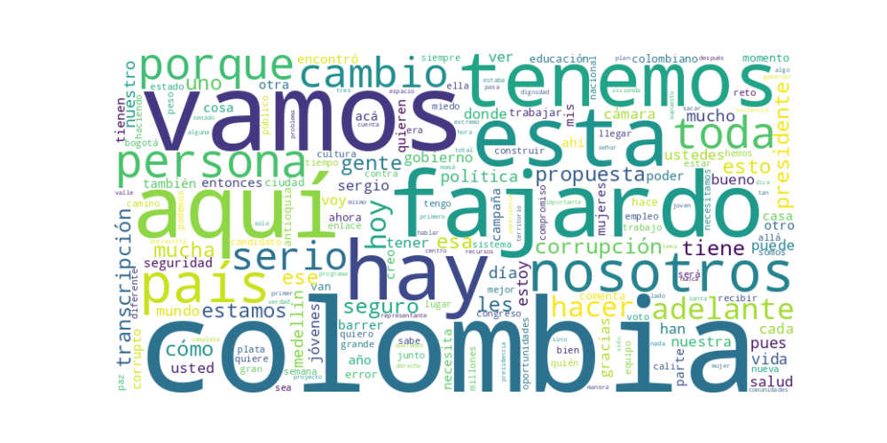

Seguidores: 307,451
1. Perfil de Comunicación: El candidato adopta un estilo de comunicación que combina un tono mesurado y pedagógico con momentos de cercanía e informalidad dirigida. Su lenguaje es principalmente accesible y popular, evitando tecnicismos para conectar con un público amplio. Se presenta como una figura serena y experimentada (“profesor”), pero incorpora elementos de la cultura pop (como referencias al K-Pop, Roblox o ciclismo) y un humor sutil para humanizarse y acercarse a audiencias jóvenes. Existe una clara dualidad: por un lado, la formalidad del estadista con corbata y discursos estructurados; por otro, la informalidad del abuelo que juega con su perro, reacciona a memes y comparte anécdotas familiares.
2. Temas Principales: 1. Lucha contra la Corrupción: Es el pilar central y más repetitivo de su discurso. Lo enmarca como un robo directo a los más pobres y lo vincula a todos los problemas nacionales (salud, infraestructura). Ejemplo: “Los corruptos te roban salud, seguridad, educación, oportunidades... Vamos a barrer la corrupción” (simbología de la escoba). 2. Seguridad y Convivencia: Aborda la inseguridad (extorsión, violencia) no solo con un enfoque policial (“Plan Guardián”, más policías), sino como un requisito para la “convivencia”. Propone combinar fuerza pública sólida con intervención social y cultural. 3. Educación, Juventud y Oportunidades: Presenta la educación como el motor de transformación y la gran igualadora social. Ancla sus propuestas en su historial (“Medellín la más educada”) y promete extenderlo (400 Parques Educativos). Dirige mensajes específicos a los jóvenes, abordando el desempleo juvenil y el acceso a la vivienda. 4. Polarización y Unidad Nacional: Se posiciona explícitamente como la alternativa a los “extremos” (que personifica en Iván Cepeda y Abelardo de la Espriella). Su meta declarada es “derrotar a los extremos” y “unir a la nación”, apelando a una “nueva mayoría” de centro. 5. Salud: Denuncia la crisis del sistema, la vincula directamente con la corrupción y propone medidas concretas como un “puesto de mando presidencial” para la salud y una auditoría rigurosa, especialmente a la Nueva EPS.
3. Tono y Sentimiento Dominante: El tono general es propositivo y sereno, pero con firmeza crítica. Evita la rabia y el insulto directo, pero es severo en sus críticas a la corrupción y a sus rivales políticos, a quienes acusa de alimentar la polarización. Transmite una esperanza pragmática, basada en la experiencia y el método (“sabemos cómo hacerlo”). Hay un sentimiento de urgencia moral (combatir la corrupción) combinado con optimismo en el futuro si se siguen sus propuestas.
4. Palabras Clave de Poder: * “CAMBIO. SERIO. SEGURO.”: Su eslogan principal, que repite incansablemente para marcar diferencia frente a lo que presenta como propuestas vacías o peligrosas de sus contrincantes. * “Barrer la corrupción” / “La escoba”: Su metáfora central y más efectiva para la lucha anticorrupción. Es visual, concreta y de fácil apropiación. * “Adelante” / “Adelante con Fajardo”: Eslogan de movilización y cierre recurrente, que evoca progreso y acción. * “Extremos” / “Polarización”: Términos para definir a sus oponentes y el problema que dice resolver. * “Nueva Mayoría”: El concepto que describe a su base electoral objetivo: un centro amplio que rechaza la polarización. * “Experiencia” / “Hoja de vida”: Resalta su recorrido como alcalde y gobernador para validar su capacidad de gobierno frente a rivales que presenta como improvisados o extremistas.
5. Conclusión Estratégica: La estrategia de comunicación de Sergio Fajardo busca posicionarlo como el candidato serio, experimentado y decente en medio de una contienda polarizada. Su discurso apela a un electorado de centro, cansado del conflicto político, que valora la gestión técnica por encima de la retórica confrontacional. Habla tanto a quienes añoran seguridad y orden, como a jóvenes y clases medias urbanas preocupadas por la corrupción, la educación y las oportunidades. Utiliza una narrativa dual: por un lado, el estadista probo que “sabe gobernar”; por otro, el ciudadano accesible y moderno que entiende las nuevas culturas. Con su mensaje anticorrupción como estandarte y el rechazo a los extremos como marco, busca evocar un sentimiento de confianza, tranquilidad y esperanza en un futuro mejor construido desde la moderación y la gestión eficiente. Su gran desafío comunicacional es transformar esa imagen de seriedad en una corriente de emoción y movilización suficiente para competir con maquinarias políticas más arraigadas.
Reporte de Análisis Estratégico: Corpus de Éxito en Comunicación Política
1. Resumen del Patrón de Éxito: La fórmula de éxito del candidato se basa en una comunicación de contraste emocional y tonal. Parte de reconocer un presente de miedo, rabia y problemas ("Colombia cansada"), pero rápidamente pivota hacia una narrativa de esperanza activa y carácter colectivo. Su mensaje no es una simple promesa, sino una invitación a un esfuerzo compartido ("escalar juntos"), donde él se presenta como el guía sereno y capacitado para ese camino. El éxito reside en transformar la energía negativa de la polarización en una motivación positiva hacia un "cambio serio y seguro".
2. Tácticas de Comunicación Clave: * Contraste Binario (Nosotros vs. Ellos): Define claramente dos bandos. De un lado está "la rabia", "la división", "los extremos", "los corruptos" y "el miedo". Del otro, su propuesta de "carácter", "resultados", "diálogo", "esperanza" y "unidad". Este contraste simplifica el panorama político y posiciona su mensaje como la única alternativa sensata. * Apelación a la Esperanza Colectiva sobre el Miedo Individual: Mientras reconoce problemas reales (inseguridad, corrupción), no explota el miedo paralizante. En su lugar, canaliza la indignación hacia una esperanza activa y concreta: la promesa de un país donde el esfuerzo individual (del trabajador, la maestra) sea recompensado y el Estado funcione. * Personalización del Mensaje y Humanización: Utiliza símbolos poderosos (el himno, una montaña, una escoba) y anécdotas personales ("tesoros" como un dibujo infantil) para crear momentos de autenticidad y calidez. Esto rompe la frialdad del discurso político y lo conecta con valores universales (familia, fe, esfuerzo). * Llamado a la Acción Simbólico y Concreto: Sus llamados no son sólo a votar, sino a unirse a un proyecto moral y de limpieza nacional ("barrer la corrupción", "escalar juntos", "sumar, no dividir"). La acción es tanto práctica (votar el 7 de agosto) como simbólica (elegir la esperanza sobre el miedo).
3. Temas de Mayor Resonancia: 1. Lucha contra la Corrupción: Enmarcada no como un problema abstracto, sino como un robo directo a la vida, salud y sueños de las personas. Es su tema bandera más distintivo y emocional. 2. Superación de la Polarización y los "Extremos": Posicionarse como la "nueva mayoría" sensata entre dos polos (representados por nombres como Cepeda y De la Espriella) que considera destructivos. Ofrece "serenidad" y "capacidad de acuerdos". 3. Seguridad con Enfoque Integral: La presenta no sólo como presencia policial, sino vinculada a desarrollo territorial armónico, inclusión social y un enfoque de género. La conecta con oportunidades y confianza institucional. 4. Fe y Valores Éticos: Su carta a los creyentes no es sectaria; usa el lenguaje espiritual universal (miedo vs. esperanza, compasión) para ampliar su mensaje de reconciliación nacional y darle un piso ético.
4. Perfil de la Audiencia Implícita: El discurso apunta a un electorado cansado del conflicto político tradicional, susceptible al desencanto pero no radicalizado. Habla a quienes: * Valoran el carácter y los resultados por encima de la ideología o el carisma explosivo. * Se sienten afectados por la corrupción y anhelan un gobierno técnico y honesto. * Temen el conflicto social (como el "estallido" en el Valle del Cauca) y buscan estabilidad y diálogo. * Son sensibles a mensajes de fe, familia y esfuerzo personal, sin ser necesariamente de un credo o partido específico. Es una audiencia de centro amplio, aspirational y con un profundo deseo de reconciliación nacional.
5. Conclusión Estratégica: La clave fundamental del poder de su discurso es su capacidad para encarnar y ofrecer una "tercera vía emocional". No es la rabia de la oposición ni la arrogancia del poder tradicional. Es el "carácter" frente al "grito"; la "esperanza activa" frente al "miedo paralizante"; la "serenidad capacitada" frente a la "agitación vacía". Se diferencia del discurso político tradicional al presentarse no como un salvador, sino como el facilitador de un esfuerzo colectivo ("escalar juntos", "limpiar la casa"). Su potencia reside en que no vende un sueño inalcanzable, sino un proceso creíble y sereno ("Cambio. Serio. Seguro.") hacia un país que funcione, resonando con el profundo anhelo de normalidad, decencia y progreso ordenado de un segmento decisivo del electorado colombiano.

Caption: El 7 de agosto cantaremos juntos el himno nacional. 🇨🇴
Likes: 1,935 | Comentarios: 82 | Reproducciones: 20,827
Ver en InstagramCaption: No le pagamos a contratistas para salir a marchar ni obligamos a funcionarios públicos a apoyarnos. Nosotros construimos a pulso.
Likes: 1,111 | Comentarios: 51 | Reproducciones: 13,208
Ver en InstagramCaption: Hemos recorrido un largo camino por Colombia. Mañana doy el siguiente paso hacia un CAMBIO. SERIO. SEGURO. 🇨🇴
Likes: 1,598 | Comentarios: 55 | Reproducciones: 19,835
Ver en Instagram